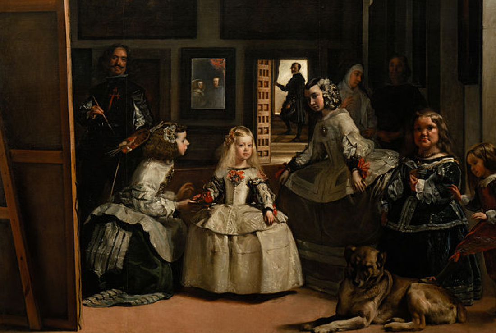

The Inspiration

Las Meninas by Diego Velazquez
Take one look and you’ll find that most people are staring straight at you. No glares, no smiles, strictly blank, emotionless stares. Stare back and you’ll notice the effortless poise and perfection of the royal court, from the Princess of Spain perched like a china doll in the center down to the royal dog at her feet.
Quite an intimidating bunch to say the least.
In the 21st century, this myth of effortless perfection is still very much relevant. We encounter it day to day. Social media is a canvas on which we paint perfect lives. I think you have your life together, and you think I have mine, so we both get caught up in a strive for this unattainable goal of perfection.
I want my design to instantly inspire vulnerability. I want to motivate people to open up about their stresses and their anxieties, their fears and their worries. To simply listen to one of my favorite Disney princesses and let it go .